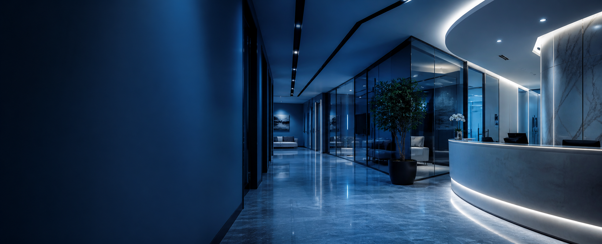
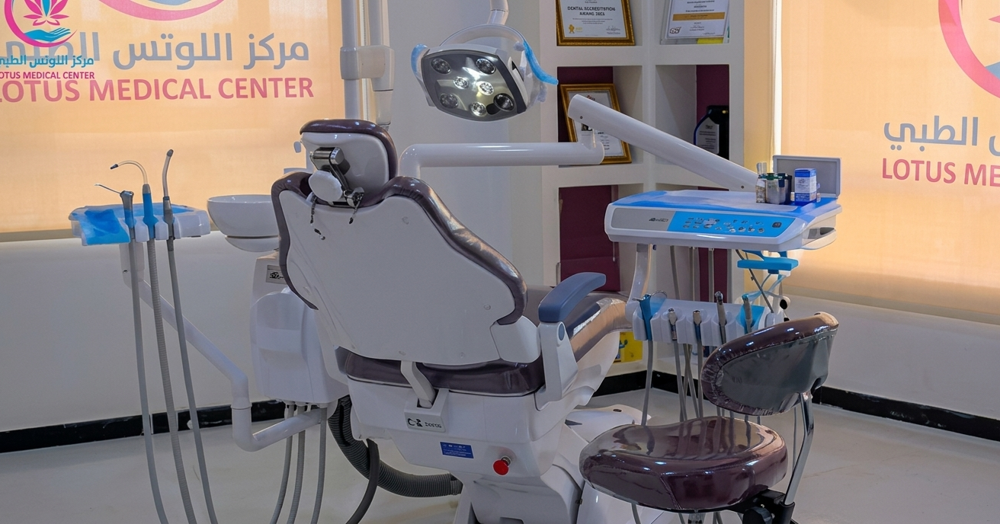

كفاءات طبية متميزة
فريق من الاستشاريين والأطباء ذوي الخبرة.
في مركز اللوتس الطبي بصنعاء، نرافقكم بخبرة طبية موثوقة، تشخيص دقيق وتقنيات حديثة — لتجربة علاجية أكثر راحة واطمئنانًا لكل أفراد الأسرة.


نسعى في مركز اللوتس الطبي إلى تقديم تجربة علاجية وصحية متميزة تليق بمراجعينا في مدينة صنعاء. نجمع بين الدقة في التشخيص والسرعة في توفير الخدمة ضمن بيئة آمنة ومريحة.
فريق من الاستشاريين والأطباء ذوي الخبرة.
أجهزة تشخيص وعلاج ترفع جودة النتائج.
معايير دقيقة للتعقيم وحماية بيانات المرضى.
اختر العيادة المناسبة واحجز موعدك مباشرة مع الفريق الطبي.

تجميل وزراعة الأسنان، التقويم، علاج الجذور وتركيبات البورسلين والزركون.
د. شيماء الحداد • د. لمياء الحدادمتابعة الحمل والولادة، علاج الاضطرابات وفحص الأجنة بالموجات الصوتية.
د. فاتن العبسياستشارات الصحة الإنجابية ووسائل تنظيم الأسرة والمباعدة الآمنة.
د. إيحا العسليتشخيص اضطرابات السمع والاتزان والجيوب الأنفية بأحدث المناظير.
الاستشاري د. منصور الذبحانيتحاليل هرمونية وكيميائية ودلالات أورام بأجهزة آلية دقيقة.
تضميد وخياطة الجروح وعلاج الحروق وفق معايير مكافحة العدوى.
الأدوية والمستلزمات الطبية مع إرشادات صيدلانية متكاملة.
سونار وأشعة تلفزيونية حديثة لدعم دقة التشخيص.
أرشفة آمنة لتاريخ المريض تسهّل المتابعة وتحفظ الخصوصية.
توجيه المراجع إلى التخصص الأنسب وشرح رحلته العلاجية.
لم تجد إجابتك؟ تواصل معنا مباشرة وسيقوم فريقنا بمساعدتك.
اسأل عبر واتسابيمكنك الحجز عبر نموذج الموقع أو التواصل مباشرة على واتساب أو الهاتف.
تعمل العيادات من 8 صباحًا حتى 8 مساءً، بينما يستقبل قسم الطوارئ الحالات على مدار الساعة.
نعم، قسم الطوارئ مجهز ويعمل 24 ساعة طوال أيام الأسبوع.
شارع الستين الشمالي، أمام الشركة اليمنية السعودية، صنعاء.